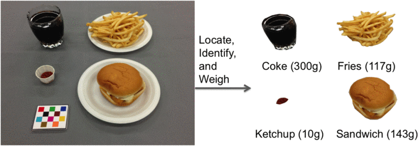

Convolutional Neural Networks (CNNs) for Food Recognition
Convolutional Neural Networks (CNNs) are a deep learning method widely used for tasks like image classification, object detection, and feature extraction. CNNs are particularly effective in handling image data due to their deep structure and the convolution process, which allows for object detection in various domains, including food classification.
CNNs are composed of two main parts: the feature extraction layer and the fully connected layer.
Convolution Layer
This layer detects patterns in the image by applying filters to the input image. For instance, in a CNN architecture, a filter slides over the image, multiplying corresponding pixel values to detect textures and edges.

Pooling Layer
Following convolution, the pooling layer reduces the size of the data by partitioning it and selecting the maximum value from each section (max-pooling), simplifying the data while retaining important features.

Fully Connected Layer
At the end, this layer combines all the features from the previous layers and uses a softmax function to classify the object based on probability.
CNN Application in Food Recognition
In food recognition, CNNs can be used to classify images of dishes by processing images under consistent conditions like brightness and distance. For example, a dataset could include foods like rice, fried chicken, and tofu, captured in uniform settings for accurate analysis.
Sample Images from the Food-101 Dataset
The Food-101 dataset contains over 101,000 images across 101 categories of food. These images are used for training and testing machine learning models. By learning from this diverse dataset, CNN models can generalize better to unseen food images.

Food Classification and Identification
Food classification systems aim to categorize food items into predefined categories such as "pizza," "pasta," or "salad." Convolutional Neural Networks (CNNs) are commonly used for multi-class classification tasks, significantly improving the accuracy of food identification in comparison to traditional methods like Support Vector Machines (SVMs) and k-Nearest Neighbors (k-NN).
Food Classification Example Using CNN

import tensorflow as tf
from tensorflow.keras import layers, models
# Sample CNN model for food classification
model = models.Sequential([
layers.Conv2D(32, (3, 3), activation='relu', input_shape=(150, 150, 3)),
layers.MaxPooling2D((2, 2)),
layers.Conv2D(64, (3, 3), activation='relu'),
layers.MaxPooling2D((2, 2)),
layers.Conv2D(128, (3, 3), activation='relu'),
layers.MaxPooling2D((2, 2)),
layers.Flatten(),
layers.Dense(512, activation='relu'),
layers.Dense(101, activation='softmax') # 101 food categories in Food-101 dataset
])
# Compile the model
model.compile(optimizer='adam',
loss='categorical_crossentropy',
metrics=['accuracy'])
# Model summary
model.summary()
This code demonstrates how to build a CNN for food image classification using the Food-101 dataset, inspired by techniques like those described in the "DeepFood" paper by Liu et al.
Food Weight Estimation
Estimating the weight of food items from images is critical for nutritional analysis and calorie estimation. The challenge lies in deriving weight information from 2D images, which usually only contain texture, color, and basic shape information. Several approaches have been proposed to address this, as highlighted in studies like those by Ye He et al., 2013.
One common method is to use a combination of **image segmentation** and **depth estimation** to estimate the volume of food on a plate. By leveraging datasets annotated with both food type and corresponding weight, models can be trained to predict the portion size of specific foods.
Depth estimation techniques can either rely on stereo vision systems or use single image depth estimation algorithms, which apply machine learning techniques to infer the relative depth of objects. This can then be correlated with known food densities to estimate weight.

Examples of image segmentation and segmentation refinement. (a) shows the original images. (b) shows the initial segmentation results using local variation segmentation method. (c) shows the segmentation refinement using food classification confidence score. (d) shows the final image segmentation results after fast rejection.